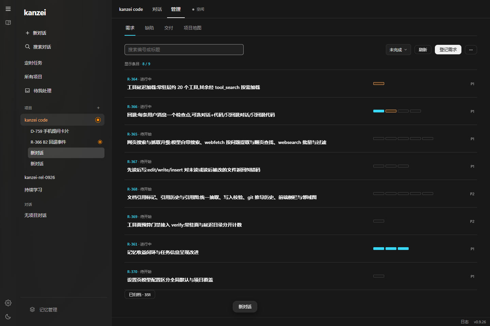
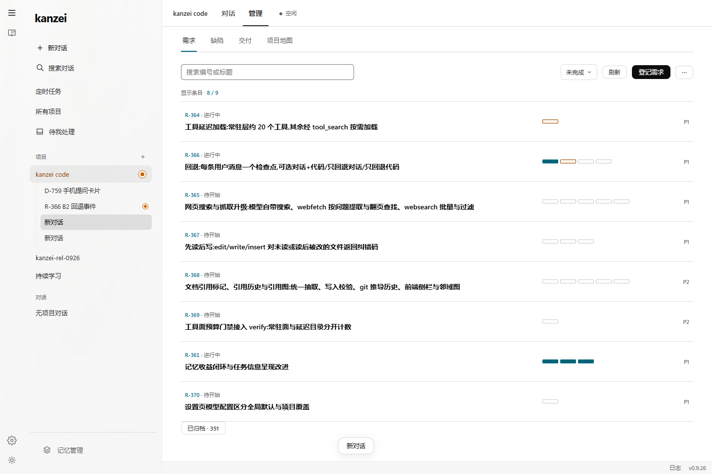
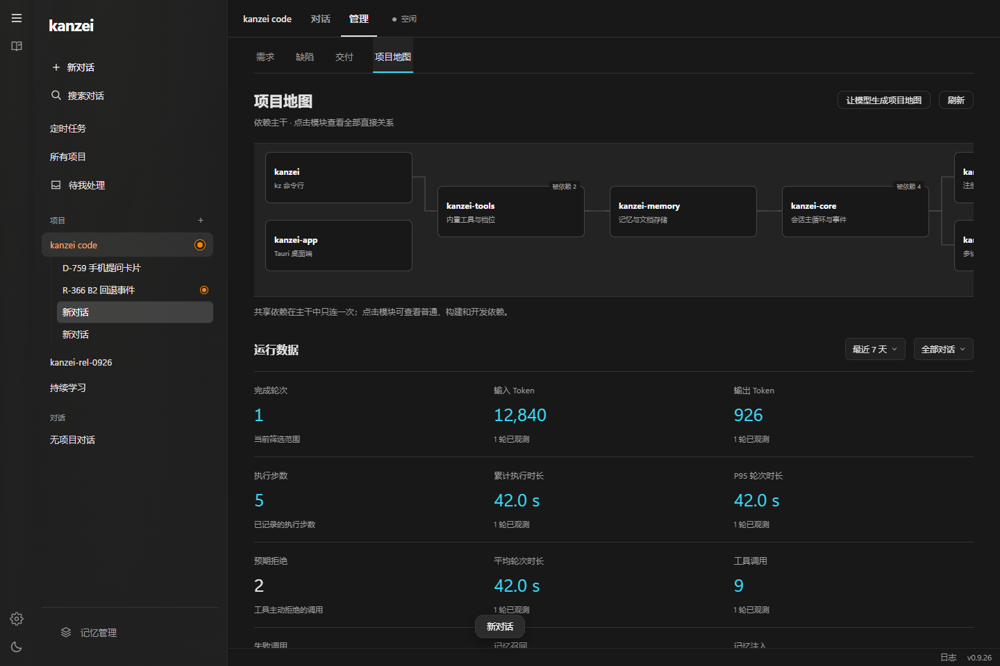
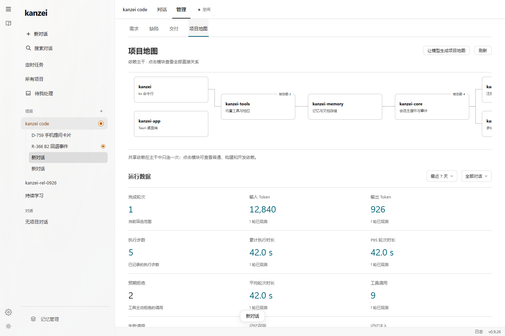
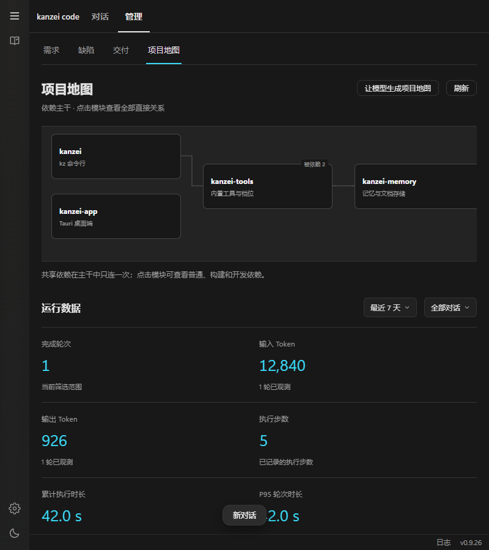

将已认可的青蓝点缀应用到产品
需求面板、数量与结果反馈，
在原有界面中补上少量青蓝。
这一页展示产品源码的实际渲染结果。截图使用隔离 IPC 数据，不是重新画的概念稿；生产数据、真实网络和安装版本的边界分别保留。第一、二轮观察是历史快照，其中复现的问题以本页的修复与当前回归结果为准。
点缀具体落在哪里
| 位置 | 青蓝的范围 | 状态区别 |
|---|---|---|
| 管理页需求与缺陷 | 编号、选中标签的细下划线、搜索后的匹配数量 | 正文、状态文字、优先级与页面底色保持现状。 |
| 需求批次与验收 | 已完成批次、验收编号、当前版本已有证据 | 执行中仍是橙色；被替代批次、旧证据和待验证仍是中性。 |
| 运行数据数字 | 完成轮次、已观测 Token、时长、工具调用、记忆数据 | 非零失败数保留错误色；预期拒绝保持中性；缺少观测显示“—”。 |
| 附件、交付与资源链接 | 文件类型小图标 | 文件名、正文与卡片底色保持现状。 |
| 保存与复制 | 确认成功后的小勾号与现有成功短反馈 | 不提前把“等待”“未保存”或失败染成成功色。 |
深色复用图标的 #39d8f6；浅色使用同色相的 #006579 保持可读性。发送、运行、警告和错误沿用现有橙色体系。



查看浅色运行数据与 800px 布局


点击之后也有明确反馈
| 场景 | 落实的行为 | 验证方法 |
|---|---|---|
| 管理页刷新 | 立即显示“正在刷新…”，禁用重复提交；结束后恢复。搜索文字保留。 | 控制读取回执，在等待中和回执后分别检查按钮。 |
| 模型 / 思考保存失败 | 乐观值仅供等待显示，供发送读取的本地值只在写入成功后更新；失败恢复已确认值。 | 注入写入拒绝，随后真实点击发送，检查请求使用已确认模型。 |
| 连续选择与保存中发送 | 按线路串行写入；旧请求不会抹掉较新的待保存选择。发送等待已排队的设置；写入失败保留草稿。 | 逐个释放/拒绝设置回执，检查 pending、最终值与发送参数。 |
| 编辑器首次加载 | 显示“正在加载编辑器…”，加载失败显示原因，等待时不暴露空白编辑区。 | 控制真实编辑器加载 Promise 的等待与失败。 |
| 运行中添加附件 | 附件旁持续说明需要等本轮结束；文字与附件均保留；终态自动收回说明。 | 文件输入、点击发送、注入终态并检查草稿与提示。 |
| 提问选项 | 说明“点击选项即回复”，原始选项与提交值仍然一致，保留发送中禁用和返回对话行为。 | 既有原生 question 验收与当前工作流回归。 |
| 通知权限未开启 | 说明任务正常执行、完成提示留在应用内，避免“重试”被理解为重发任务。 | 核对真实观察与调用路径；未更改系统权限。 |
| 复制反馈 | 等待剪贴板成功回执才出现青蓝成功提示。 | 延迟剪贴板回执，确认等待时没有成功提示。 |
扩大后的审视范围
新增回归覆盖管理列表的查询、空结果、清除查询、焦点、刷新等待、刷新完成、需求/缺陷切换、运行数据已知与未知值、明暗主题和 800px 布局；同时覆盖模型与思考设置失败、连续设置与发送、编辑器等待与失败、附件限制与终态、复制等待与完成。
另复核工作台、设置、记忆、架构、线路、文档、文件七个页面的实际首屏。既有回归继续覆盖设置保存期间继续编辑、设置读取失败与重试、管理文档编辑草稿、语言切换保留焦点、归档跨页隔离、地图读取竞态、文件保存与外部冲突、发送防重复、排队/插入、停止及迟到事件。
新增交互检查原始结果 · 既有设计审视回归结果 · 修复前的模型不一致证据
可复现：node scripts/ui-cyan-interactions-smoke.mjs。该检查已加入统一验证清单；完整发布凭据由 scripts/verify.ps1 -Full 绑定最终提交，随后正常打包发版。
证据边界
本页截图是当前产品代码在 Edge 的实际渲染，后台使用隔离 IPC 与内存文件；检查数不代表全产品覆盖率。真实 read、停止和 question 已在第二轮安装版操作过，原始截图保留在主报告。真实断网恢复、系统文件选择器、语音打断、多窗口争用、长时间运行与读屏器尚未作为本次完整验收项。发布链接和正在运行的安装版本以最终交付说明为准。